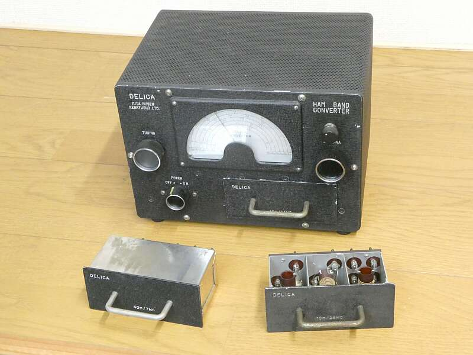
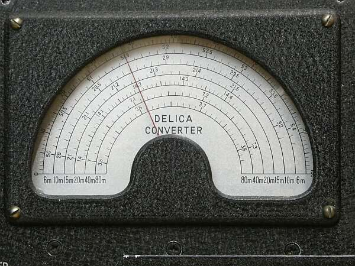
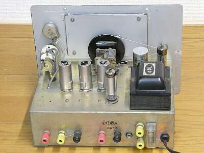
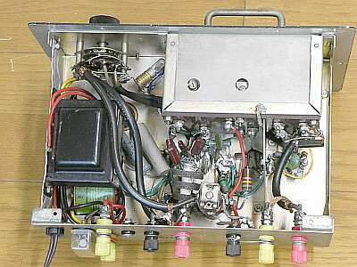
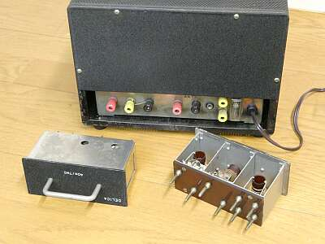
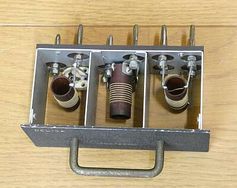

 |
デリカ（三田無線研究所）から、昭和３０年代初期に発売されたHFコンバータです
３．５～５０MHｚ ハムバンド６バンドを、１．５ＭＨｚに変換するコンバータです
バンド切替は持たず、プラグイン・コイル・ユニットの差し替えによりバンド選択を選択します
その昔の National（US) ＨＲＯ みたいです
当時、ＩＦが４５５ＫＨｚのシングル・スーパー・ヘテロダイン方式が一般的な受信機の構成でした
そのものを親機に、ダブル・スーパー・ヘテロダイン方式にアップ・グレードしようとする装置です
可変の１ｓｔ-ＩＦとして親機を使用する、クリスタル式のコンバータを採用した、コリンズ方式のダブル・スーパー・ヘテロダインがある一方、本機のように、固定の１ｓｔ-ＩＦを採用し可変ローカル・オシレータを使用したダブル・スーパー・ヘテロダイン方式も、数多く存在しました（イメージ混信から逃れるため、ＩＦ周波数を高くとった）
古くからのメーカーは、この方式の採用でした
コリンズの登場は、いわば新しい「風」でした
本機ですが、Ｋｉｔ価格で￥６，８００（球無し） とあります
またプラグインユニットは、￥１，５００／1バンドとなっています
１９６３年 大卒初任給平均が ￥１６，０００ の頃です
この後、３．５～２８MHｚ帯をカバーするコイル・パックを内蔵して、バンド切替ＳＷを使うモデルも発売されましたが、高名なのは本モデルです |
| 
各バンドについては、このダイヤルのように展開されます |
|
うんちくは、創業者である茨木悟氏（Ｊ１ＦＱ／Ｊ２ＩＨ）の記事が、ＣＱ誌ほか多くありますので、そちらを探してお読みいただくのが良いと思います
こちらで手掛けてみた様子は、ＴＲＩＯ ９Ｒ-５９＋ＤＥＬＩＣＡ のページでご紹介しています
表記価格については、その時期によって異なります（確認した時期の広告から引用しています） |
|
 |
シャーシ上面です
リアパネル側から写したもの
整流管、定電圧放電管を含め、５球構成です
ダイヤル糸は切れていましたので、やや細いものですが手持ちの糸に張り替えました |
 |
シャーシ下面
キットを組み立てたものに違いないと思います
平滑用チョーク・トランスがデカい！ |
 |
リア・パネルです
ヒューズホルダにはちゃんとカバーがかかっています
アンテナ系の入出力は、全て陸式ターミナルです
M型コネクタではありません
当時、同軸ケーブルは、高嶺の花 |
 |
このコイルユニットは、２８ＭＨｚ用です
・ＡＮＴ入力
・ＲＦ出力
・オシレータ
この３つのコイル・セットです
コンタクト部は、バナナ・チップ同等です
実用には、発振の安定度が「肝」です |
|
|